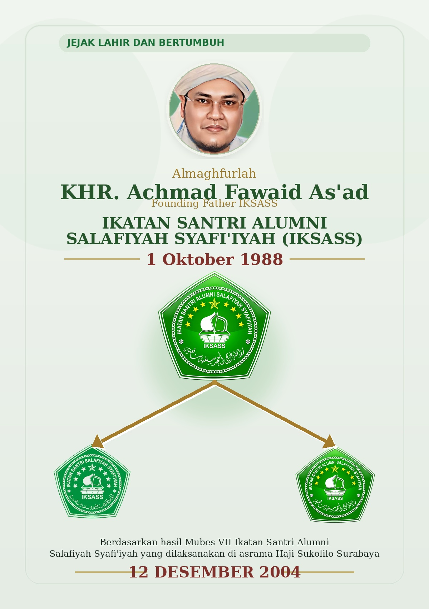

Muncul banyak organisasi santri berbasis daerah asal yang kemudian mendorong kebutuhan penyatuan.
Jejak lahir dan bertumbuh
Sejarah IKSASS
Perjalanan lahir, berkembang, dan menguatnya Ikatan Santri dan Alumni Salafiyah Syafi’iyah sebagai wadah persatuan, kaderisasi, dan pengabdian dari pesantren untuk masyarakat.

Pengukuhan langsung di bawah naungan Pondok Pesantren Salafiyah Syafi’iyah Sukorejo Situbondo.
Menjadi jembatan antara pesantren, santri, alumni, dan kebutuhan nyata masyarakat.
Latar Historis
Latar Belakang Berdirinya
Pada medio tahun 1961 hingga 1986, di lingkungan Pondok Pesantren Salafiyah Syafi’iyah Sukorejo Situbondo bermunculan berbagai organisasi santri yang menggunakan identitas daerah asal sebagai simbol dan nama organisasi. Organisasi-organisasi tersebut lahir dari ikatan emosional kedaerahan para santri yang datang dari berbagai wilayah di Nusantara.
Dalam perkembangannya, semangat kedaerahan itu di satu sisi mempererat hubungan sesama santri asal daerah yang sama, tetapi di sisi lain berpotensi menimbulkan persaingan yang kurang sehat antarkelompok. Situasi inilah yang kemudian melahirkan kesadaran bahwa perlu ada sebuah wadah bersama yang dapat menyatukan seluruh santri dan alumni dalam satu organisasi yang lebih kokoh, terarah, dan bermanfaat bagi pesantren.
Linimasa Perjalanan
Tonggak Perkembangan IKSASS
Narasi sejarah disusun secara bertahap agar perjalanan organisasi lebih mudah dibaca dan dipahami.
1961–1986
Masa Organisasi Kedaerahan
Berbagai organisasi santri berbasis daerah asal tumbuh di lingkungan pesantren. Fase ini menunjukkan kuatnya ikatan emosional antarsantri sekaligus menghadirkan kebutuhan akan penyatuan organisasi.
11 Maret 1988
Keputusan Integrasi
Pengurus Pondok Pesantren Salafiyah Syafi’iyah memutuskan untuk mengintegrasikan organisasi-organisasi santri yang bersifat kedaerahan ke dalam satu wadah bernama IKSASS.
1 Oktober 1988
Pengukuhan Resmi
Almarhum KHR. As’ad Syamsul Arifin mengeluarkan SK Nomor: 55/0828/A.1/X/1988 yang mengukuhkan IKSASS sebagai badan otonom di bawah naungan langsung Pondok Pesantren Salafiyah Syafi’iyah.
1988–2004
Penguatan Organisasi
IKSASS berkembang dalam jumlah anggota, rayon, dan sub rayon. Kegiatan organisasi juga bergerak dari pola seremonial menuju program yang lebih nyata dalam peningkatan kapasitas santri.
10–12 Desember 2004
MUBES VII
Forum yang berlangsung di Asrama Haji Sukolilo Surabaya ini menjadi tonggak sejarah baru karena memisahkan IKSASS Santri dan IKSASS Alumni secara struktural dan kelembagaan, namun tetap dalam satu misi kultural.
Hari Ini
Keberlanjutan Peran
IKSASS terus meneguhkan perannya sebagai wadah kaderisasi, silaturahmi, dan pengabdian yang bergerak di bidang keagamaan, kemasyarakatan, kemanusiaan, kebangsaan, dan pemberdayaan masyarakat.
Orientasi Gerak
Tujuan dan Landasan Pengabdian
IKSASS didirikan untuk mengakomodasi santri dan alumni Pondok Pesantren Salafiyah Syafi’iyah yang tersebar di seluruh Nusantara. Selain itu, organisasi ini bertujuan membantu merealisasikan program-program pesantren, baik dalam lingkup mikro maupun makro, terutama pada bidang-bidang yang membutuhkan penanganan lebih intensif.
Program-program IKSASS tidak terbatas pada kegiatan seremonial atau keagamaan semata, tetapi juga mencakup bidang pelayanan, pengabdian, dan pemberdayaan masyarakat. Hal ini berpijak pada wasiat Almarhum KHR. As’ad Syamsul Arifin yang menjadi ruh pergerakan IKSASS dari masa ke masa.
Mencerdaskan Kehidupan Masyarakat
Berpartisipasi dalam pendidikan, baik secara langsung maupun tidak langsung, demi penguatan ilmu pengetahuan dan kualitas kehidupan umat.
Berpartisipasi di Nahdlatul Ulama
Turut aktif mengembangkan organisasi keagamaan dan sosial yang menjadi salah satu medan pengabdian pesantren di tengah masyarakat.
Pemberdayaan Ekonomi Masyarakat
Menghadirkan pendampingan dan penguatan sektor ekonomi agar tercipta kehidupan yang adil, makmur, dan sejahtera.
Tata Kelola
Sistem Organisasi dan Musyawarah
Sebagai organisasi formal, IKSASS memiliki seperangkat aturan yang menjadi pedoman dalam menjalankan organisasi, di antaranya AD/ART, garis-garis program kerja, serta sistem pengkaderan. Struktur IKSASS tersusun secara bertingkat mulai dari Pengurus Pusat (PP), Pengurus Rayon (PR), hingga Pengurus Sub Rayon (PSR).
Pergantian kepengurusan dilakukan secara periodik melalui mekanisme musyawarah, sedangkan perubahan aturan organisasi hanya dapat dilakukan melalui forum tertinggi, yaitu Musyawarah Besar (MUBES).
MUBESForum tertinggi organisasi yang menentukan arah kebijakan besar.
MUSRAForum permusyawaratan pada tingkat Pengurus Rayon.
MUSUBRAForum permusyawaratan pada tingkat Pengurus Sub Rayon.
Momentum Krusial
Pasca MUBES VII
Salah satu tonggak sejarah penting dalam perjalanan IKSASS terjadi pada MUBES VII yang dilaksanakan pada 10–12 Desember 2004 di Asrama Haji Sukolilo, Surabaya. Forum ini melahirkan keputusan krusial berupa pemisahan IKSASS antara unsur santri aktivis dan alumni, baik secara struktural maupun kelembagaan.
Meski secara struktural dipisahkan, secara kultural keduanya tetap mengemban misi yang sama, yaitu mempererat hubungan silaturahmi antara santri, alumni, dan pengasuh pesantren, sekaligus ikut membesarkan dan memajukan Pondok Pesantren Salafiyah Syafi’iyah.
IKSASS Santri
Berkonsentrasi pada pengkaderan santri yang masih aktif di pesantren.
IKSASS Alumni
Berfokus pada pengamalan nilai-nilai wasiat KHR. As’ad Syamsul Arifin dalam kehidupan masyarakat.
Estafet Organisasi
Sejarah Kepengurusan
IKSASS Awal
- 1988–1990KHR. Ach. Fawaid As’ad
- 1990–1992KH. Hariri Abd. Adhim
- 1992–1994Drs. H. Mudzakkir A. Fatah
- 1994–2001Drs. Zainal Abidin
- 2001–2004H. Achmad Muhyiddin Khatib
IKSASS Santri
- 2004–2006Muhammad Sunardi
- 2007–2009Asmawie Afa, S.Pd.I
- 2009–2011Moh. Syafi’i, S.Pd.I
- 2012–2014Khairul Anam, S.Pd.I
- 2013–2015Syaiful Rijal
IKSASS Hari Ini
Menjaga Akar, Menguatkan Langkah
Berlandaskan Pancasila, IKSASS tetap eksis sebagai organisasi kaderisasi dan pengabdian yang berkomitmen pada bidang keagamaan, kemasyarakatan, kemanusiaan, kebangsaan, dan pemberdayaan masyarakat. Dengan semangat persatuan, pengabdian, dan keberlanjutan kaderisasi, IKSASS terus meneguhkan perannya sebagai jembatan antara pesantren, santri, alumni, dan masyarakat luas.